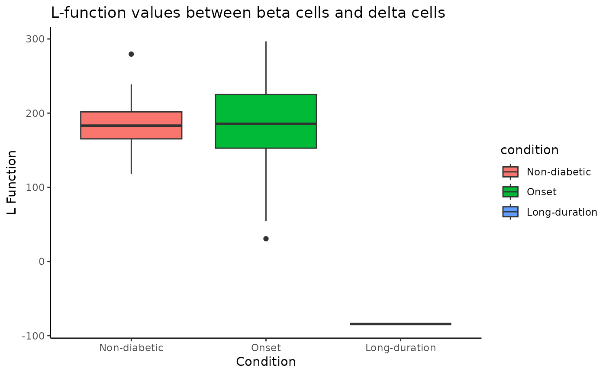

Plots boxplot for a specified cell-cell relationship
Examples
data(spicyTest)
spicyBoxPlot(spicyTest,
rank = 1)
#> Warning: Removed 53 rows containing non-finite outside the scale range
#> (`stat_boxplot()`).
#> Warning: The following aesthetics were dropped during statistical transformation: label.
#> ℹ This can happen when ggplot fails to infer the correct grouping structure in
#> the data.
#> ℹ Did you forget to specify a `group` aesthetic or to convert a numerical
#> variable into a factor?
